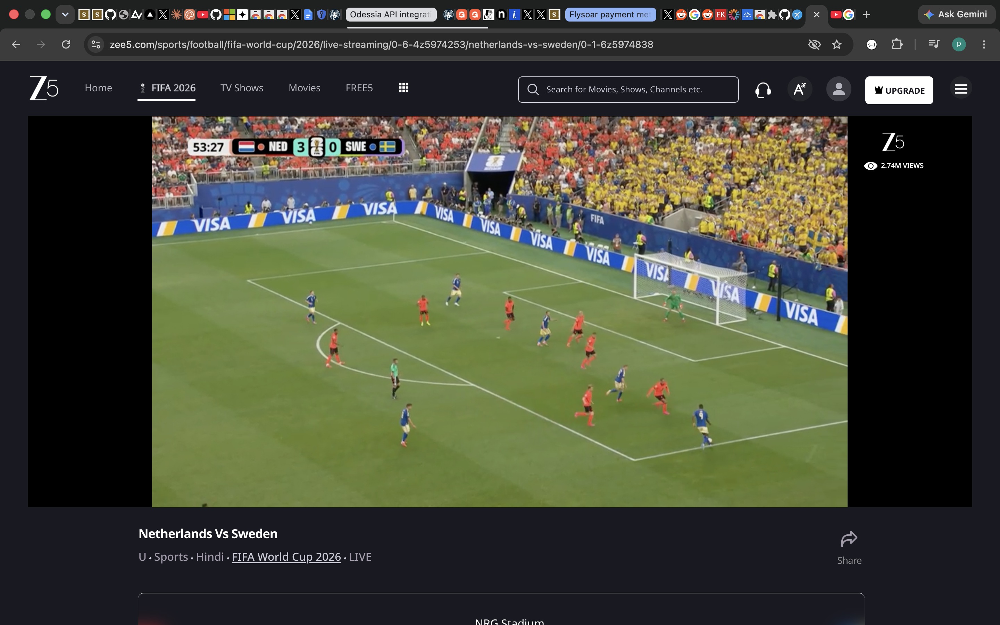
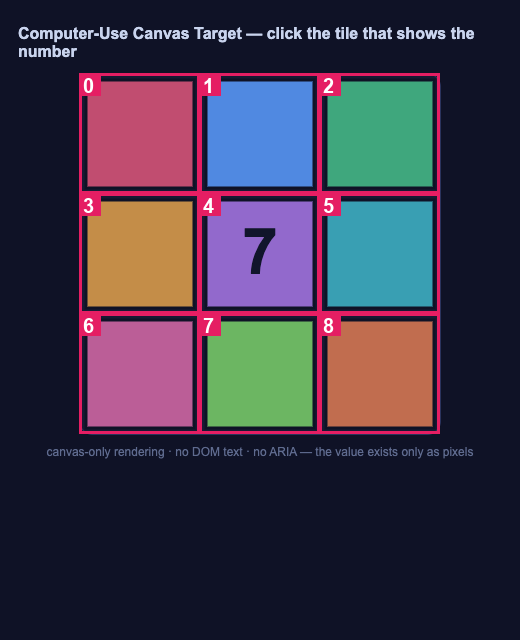
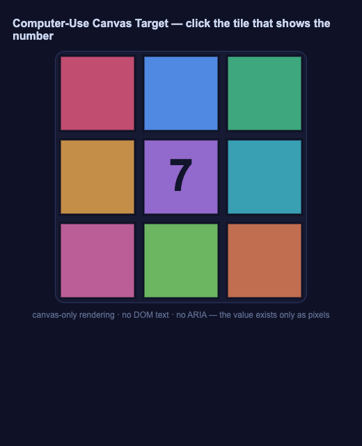
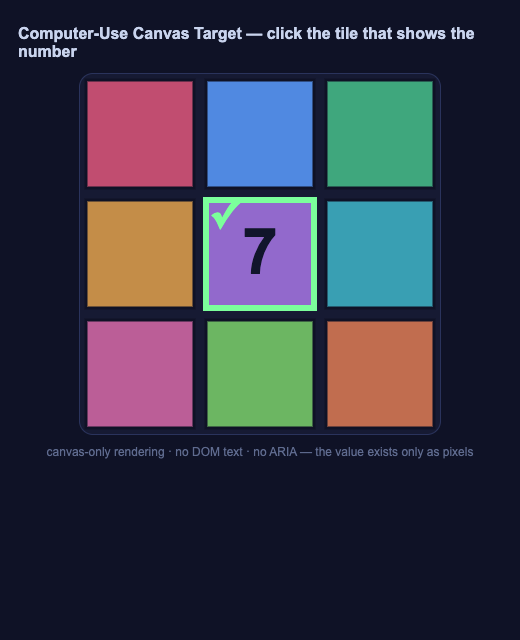
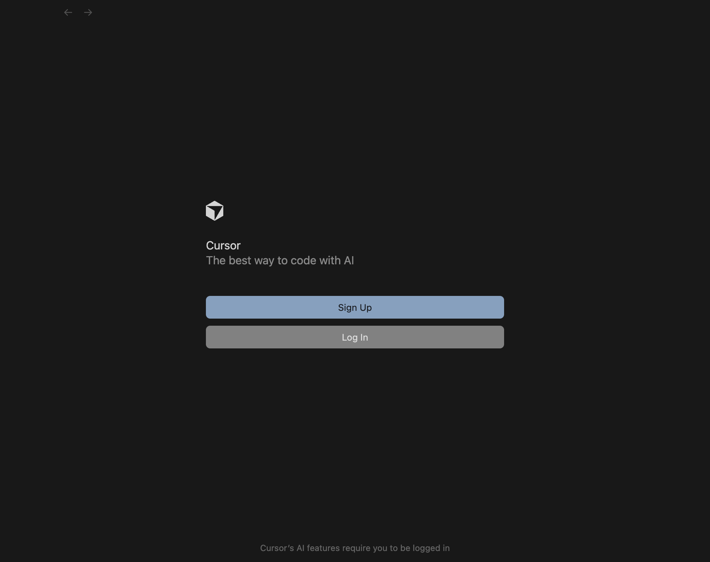

🖥️ Computer-Use Replay
run
cu-run-20260620-234522 · plan fallback · five-layer cascade: L1 → page → L2a → L2b → L3 → L45
turns
7
actions
10
frames
3
LLM/vision
$0.0073
cost
64.2
seconds
1 · Goal
Solve three real desktop tasks through the five-layer control cascade: Calculator via hotkeys (zero vision), a canvas game via vision, and a draft in Cursor over the Electron debug port.
2 · Plan (DAG of catalogue skills)
flowchart TD
calc["Calculator via deterministic hotkeys (L2a · zero vision)<br/><i>computer_use</i>"]
canvas["Canvas game read via vision (forces L3)<br/><i>computer_use</i>"]
electron["Cursor over electron_debugging_port (page path)<br/><i>computer_use</i>"]
report["Assemble CU replay + verify constraints<br/><i>report_cu</i>"]
calc --> report
canvas --> report
electron --> report
3 · Constraint satisfaction
| Constraint | OK | Evidence |
|---|---|---|
| ≥1 task uses vision (L3) | ✅ | canvas_vision: 1 vision call(s) |
| ≥1 task uses the Electron page path | ✅ | electron_cursor: headline layer = page (CDP via debug port) |
| ≥1 task completes with ZERO vision calls | ✅ | electron_cursor: status=ok, vision_calls=0 |
4 · Five-layer cascade — per-intent ladder
| Task-intent | Chosen | Ladder (✅ ok · ❌ failed · ⏭️ not reached) |
|---|---|---|
| preflight: Accessibility permission for synthetic input ⭐ | failed | ❌ L4System Events refused assistive access (error -1719). Grant Terminal/host app Accessibility in System Settings → Privacy & Security → Accessibility. |
| read the number rendered on the canvas ⭐ | L3 | ❌ L2b-axempty / invalid ✅ L3dict{mark,value} |
| click the vision-identified tile #4 ⭐ | L1 | ✅ L1ok |
| launch Cursor --remote-debugging-port (isolated profile) ⭐ | L1 | ✅ L1ok |
| attach Playwright over CDP (the page tool) ⭐ | page | ✅ pageok |
| open an untitled editor (page channel) ⭐ | page | ✅ pageok |
| type the draft into the editor ⭐ | page | ✅ pageok ⏭️ L2anot reached (cheaper layer sufficed) |
| read the composed draft back from the editor DOM ⭐ | L2b-ax | ✅ L2b-axlist[4] ⏭️ L3not reached (cheaper layer sufficed) |
| L2b cheap text-LLM judge: is the composed draft well-formed? | L2b-llm | ✅ L2b-llm4/4 expected lines present (offline: deterministic check) |
5 · Actions taken
| # | Action | Layer | Target/Intent | Detail |
|---|---|---|---|---|
| 1 | read | L3 | read the number rendered on the canvas | dict{mark,value} |
| 2 | click | L1 | click the vision-identified tile #4 | tile 4 |
| 3 | do | L1 | launch Cursor --remote-debugging-port (isolated profile) | port 9223 |
| 4 | do | page | attach Playwright over CDP (the page tool) | 127.0.0.1:9223 |
| 5 | do | page | open an untitled editor (page channel) | ok |
| 6 | do | page | type the draft into the editor | 5 lines |
| 7 | read | L2b-ax | read the composed draft back from the editor DOM | list[4] |
6 · Per-task verification
calculator — 🚧 BLOCKED
Compute 123+654 = 777 in Calculator via hotkeys; verify without vision
headline layer n/a · vision calls 0 · trajectory trajectory/calculator/
| Check | OK | Detail |
|---|---|---|
| Accessibility permission | ❌ | not granted — task cannot send keystrokes |
canvas_vision — ✅ PASS
Read the number on a canvas (no ARIA) via vision, then click its tile
headline layer L3 · vision calls 1 · trajectory trajectory/canvas_vision/
| Check | OK | Detail |
|---|---|---|
| L2b DOM/AX read found no number (vision required) | ✅ | dom_number_probe()='' → escalate to L3 |
| vision returned a reading | ✅ | tile=4 value='7' |
| vision value == rendered number | ✅ | read='7' expected='7' |
| vision tile == target tile | ✅ | read tile=4 expected=4 |
| clicking the vision tile solved the puzzle | ✅ | window.__cu_game.solved=True |
| vision layer exercised (>=1 call) | ✅ | vision_calls=1 |
electron_cursor — ✅ PASS
Compose a draft in Cursor (Electron) over electron_debugging_port; verify via DOM
headline layer page · vision calls 0 · trajectory trajectory/electron_cursor/
| Check | OK | Detail |
|---|---|---|
| attached to Electron via debug port | ✅ | vscode-file://vscode-app/Applications/Cursor.app/Contents/Resources/app/out/vs/code/electron-sandbox/workbench/workbench |
| draft composed in untitled buffer (no file saved) | ✅ | 5 lines typed via CDP keyboard |
| DOM read-back: all lines present | ✅ | 4/4 lines matched |
| contains the five-layer cascade line | ✅ | found 'L1 -> page -> L2a -> L2b -> L3' |
| ZERO vision calls | ✅ | vision_calls=0 |
7 · Trajectory frames









8 · Turns & cost
5
turns
7
actions
10
frames
3
LLM/vision
$0.0073
cost
64.2
seconds
ℹ️ Vision / text-judge calls used the offline demo gateway (mocked); set ANTHROPIC_API_KEY for live calls.
Event log (9)
[0.001s] no ANTHROPIC_API_KEY -> offline MOCK gateway (vision/text-judge are mocked).
[0.001s] planner(cu): LLM plan rejected (); falling back
[0.001s] planner(cu): using deterministic fallback plan
[0.001s] start_recording[calculator] -> /Users/priyansh/Desktop/NowOrNever/browser-agent/artifacts/cu-run-20260620-234522/trajectory/calculator
[1.729s] stop_recording[calculator] status=blocked frames=1
[10.709s] start_recording[canvas_vision] -> /Users/priyansh/Desktop/NowOrNever/browser-agent/artifacts/cu-run-20260620-234522/trajectory/canvas_vision
[15.334s] stop_recording[canvas_vision] status=ok frames=5
[16.146s] start_recording[electron_cursor] -> /Users/priyansh/Desktop/NowOrNever/browser-agent/artifacts/cu-run-20260620-234522/trajectory/electron_cursor
[63.258s] stop_recording[electron_cursor] status=ok frames=4
Computer-Use skill · five-layer cascade · trajectory directories under trajectory/ are the submitted evidence.